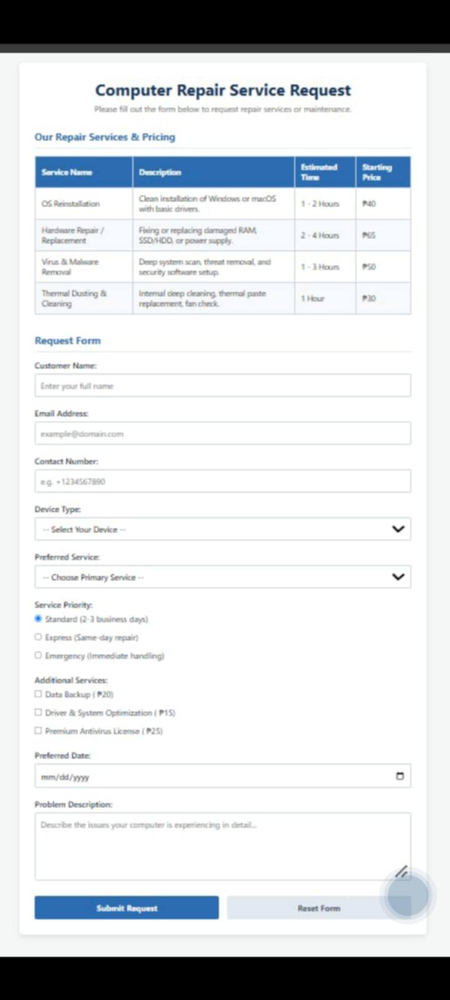

HTML5
I use headings, lists, links, and images to give a page structure. I’m learning to make forms with clear labels, too.
Headings · Lists · Forms
BSIT-1C · Cordova Public College
I’m learning how a web page goes from a blank file to something I can share. This is where I keep my class activities and small experiments.
A little background
I’m Stifany Tradio, a first-year Information Technology student at Cordova Public College. I chose IT because I wanted to make things on a computer, instead of only using what was already there.
I’m still at the beginning. Some days a layout works right away; other days I spend half an hour finding a missing closing tag. Both count as practice.
After class, I listen to music, hang out with friends, and take photos around the city with my phone.
This year, I want to understand my code, build pages that work on any device, and ask better questions when I get stuck.
What I’m learning
I use headings, lists, links, and images to give a page structure. I’m learning to make forms with clear labels, too.
Headings · Lists · Forms
The box model, Flexbox, and basic grids. I’m practicing how to make a layout fit both my laptop and my phone.
Box model · Flexbox · Grid
Spacing, colors, and responsive utility classes. I’m getting used to reading the classes and understanding what each one changes.
Spacing · Colors · Responsive
Variables, conditions, and loops in our class exercises. I use small examples and paper notes to follow the logic.
Variables · Conditions · Loops
Classwork & practice
Three small layouts that helped me practice the basics. Select a card to see the full image preview.

An introduction, a few interests, and links to my school activities. This was my first try at turning a sketch into a web page.
View image preview →
A menu for an imaginary campus lunch spot. I practiced grouping information and lining up meal names and prices.
View image preview →
A computer repair service form designed to organize customer information, computer issues, and repair requests in a clear and structured layout.
View image preview →Contacts
I’m up for comparing notes, talking through an exercise, or hearing what you’re learning. Email is the easiest way to reach me.
Catarman, Cordova, Cebu, Philippines
Cordova Public College · BSIT-1C
Usually checking messages after class.